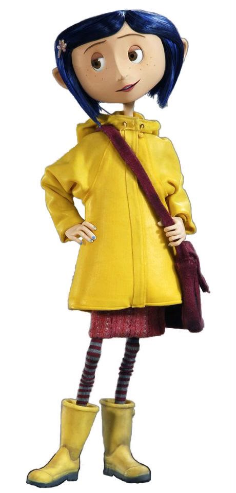
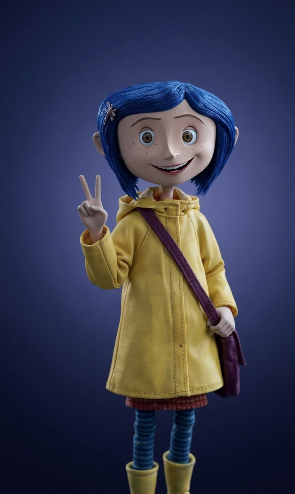

The yellow raincoat
Its bright color makes Coraline easy to notice. As a viewer, you might connect this practical outdoor clothing with her urge to explore.
This page combines visible details from the film with viewer interpretations inspired by fan video essays. Interpretations are not presented as confirmed statements from the filmmakers.
Select a stage to explore how color can change the feeling of a scene.

Coraline's yellow raincoat and blue hair make her stand out. Against a subdued setting, her appearance can suggest energy, curiosity and a wish for change.
An illustrative palette
These colors are approximate choices inspired by the imagery, not measurements extracted from the film.
Clothing gives us clues about a character before a word is spoken.

Its bright color makes Coraline easy to notice. As a viewer, you might connect this practical outdoor clothing with her urge to explore.
Blue hair gives her a distinctive visual identity. Together with the yellow coat, it creates a strong contrast that is easy to remember.
Repeated motifs and changes of clothing invite a closer look. Compare the shapes and patterns in different scenes before deciding what they might mean.
Compare the first impression created by each design. A welcoming appearance does not guarantee safety.
Her ordinary appearance belongs to an imperfect everyday life. The story asks us to look beyond the frustration of a distracted parent.
Her welcoming presentation promises attention and comfort. The button eyes interrupt that familiarity and remind us that something is wrong.
Across the film, the Other Mother's appearance becomes less human and more threatening. A useful visual reading is to follow her silhouette: what begins as familiar gradually becomes angular, elongated and difficult to trust.
The transformation is visible in the film. Its symbolic meaning is open to interpretation.
Fan theories begin with observations. Open a question and decide what you see.
Buttons replace the part of a face we often look to for emotion and connection. One possible reading is that the Other World offers an attractive surface while concealing the intentions behind it.
What changes when a familiar person can no longer meet your eyes?
It can feel like both. Rich colors and entertaining spaces attract Coraline, while unsettling details challenge that attraction. Beauty becomes part of the temptation.
Compare how Wybie stands and moves in different scenes. Does his posture suggest awkwardness, caution or something else?
A visual observation does not prove a hidden backstory. More specific theories need evidence.
Coraline's dragonfly hair clip invites attention to small design choices. A viewer can explore possible associations without assuming that every detail has one official meaning.
This page was inspired by the fan videos shared during the development of this project. The text is an original English commentary, not a transcript or a quotation from those creators.